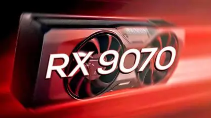

Review: Radeon RX 9070 – O Equilíbrio Perfeito para o 4K?
Construída sobre a nova arquitetura RDNA 4, a placa promete desbancar a concorrência em eficiência energética.
A chegada da Radeon RX 9070 marca um momento decisivo para a AMD. A placa foca em uma inteligência de renderização que otimiza o consumo de energia enquanto entrega taxas de quadros impressionantes.
| VRAM | 16GB GDDR7 |
| Interface | 256-bit |
| TDP | 220W |
| Arquitetura | RDNA 4 |
Performance em Jogos
Em nossos testes com títulos pesados como Cyberpunk 2077, a RX 9070 manteve uma média estável de 75 FPS em 4K nativo. Com o uso do FSR 4, esses números saltam para a casa dos 120 FPS, mostrando o poder dos novos núcleos de IA dedicados.
Ray Tracing e Eficiência
Os novos aceleradores de raio de 3ª geração reduzem a perda de performance em 40% em relação à geração anterior. Agora, reflexos em tempo real não significam mais um "sacrifício" de fluidez.
✓ Pontos Positivos
- Eficiência energética líder.
- 16GB de VRAM GDDR7 rápida.
- Excelente ganho com FSR 4.
✗ Pontos Negativos
- Tamanho robusto (3 slots).
- Preço de lançamento elevado.
Conclusão: A RX 9070 é a melhor opção para entusiastas que buscam longevidade e um preço competitivo no segmento high-end.